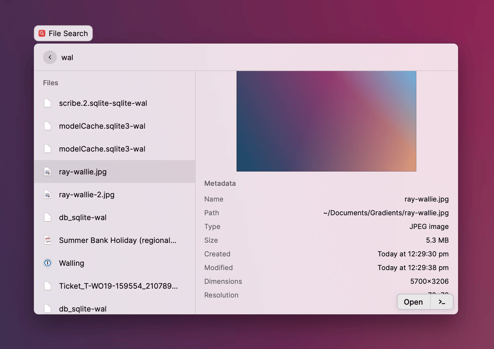
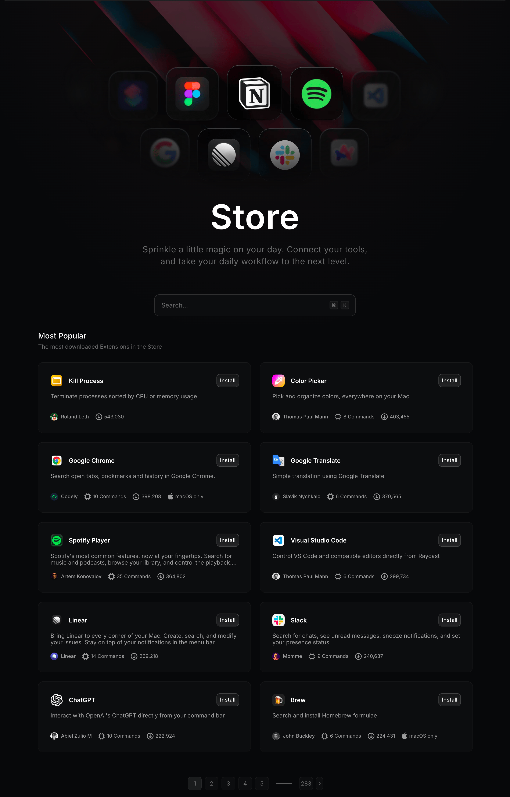
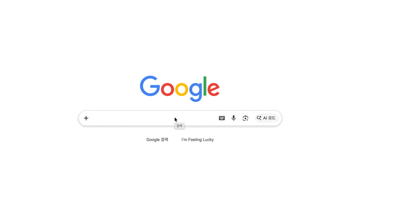
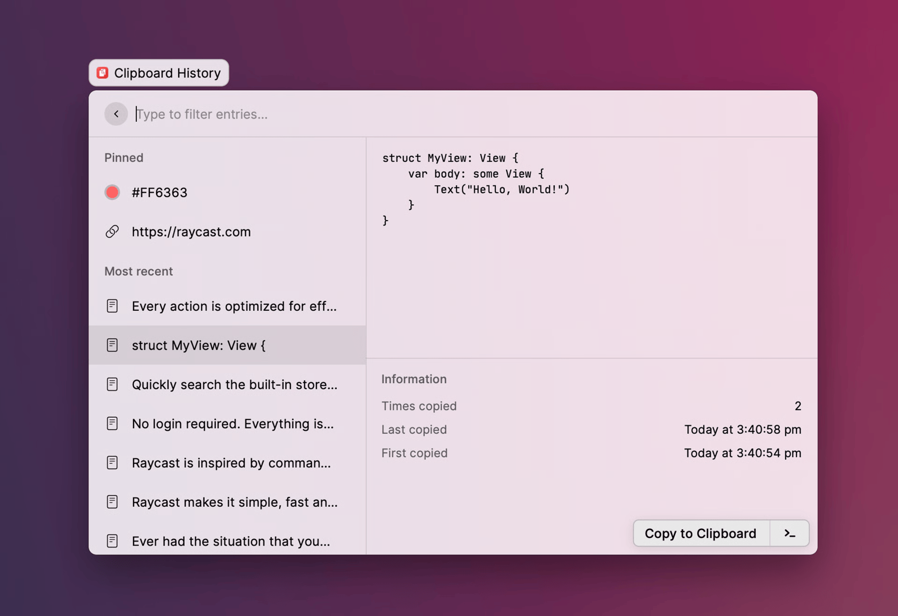
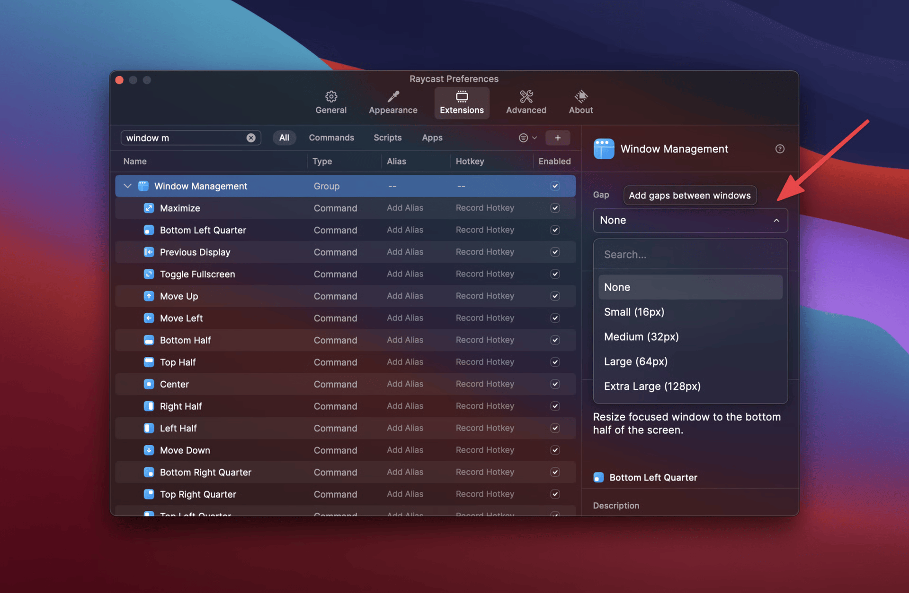
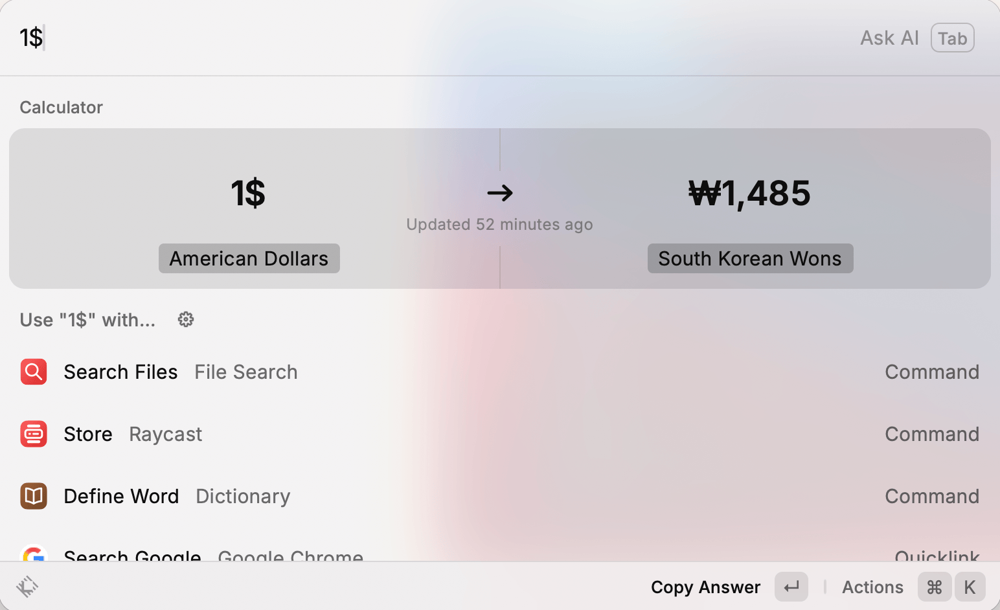

Raycast는 키보드만으로 앱 실행, 파일 검색, 명령 실행, 반복 작업 자동화까지 이어서 처리할 수 있게 해주는 생산성 도구다.
공식 소개 문구는 Your shortcut to everything이지만, 실제로는 단순한 단축키 앱이라기보다 Mac 작업 흐름의 진입점을 하나로 묶어 둔 런처에 가깝다. 앱을 열고, 파일을 찾고, 자주 가는 링크를 열고, 창을 정리하고, 캘린더를 확인하는 일들이 모두 같은 검색창에서 이어진다.
Spotlight도 빠른 검색 도구이고, Alfred도 강력한 런처로 많이 쓰인다. 다만 Raycast는 Spotlight 자리를 대체할 수 있을 만큼 가볍게 열리면서도, 확장성, 기본 내장 기능, 키보드 중심 UX를 한 제품 안에 더 촘촘하게 묶어 둔 통합형 런처라는 점에서 방향이 조금 다르다.
Tip
왜 Raycast인가
Raycast의 장점은 기능 하나가 아주 독보적이라기보다, 자주 반복되는 작은 작업들을 한 인터페이스 안에서 자연스럽게 이어준다는 데 있다.
보통 Mac에서 무언가를 처리할 때는 Spotlight, Finder, 브라우저, 캘린더, 윈도우 정리 앱, 클립보드 앱을 오가게 된다. Raycast는 이런 흐름을 검색창 하나로 끌어와서 마우스로 UI를 찾는 시간을 줄여준다.
기본 전역 단축키로 Raycast를 열고, 검색어를 입력하고, Enter로 실행하는 패턴이 거의 모든 기능에 공통으로 적용된다. 그래서 새 기능을 배워도 사용 방식이 크게 달라지지 않는다. 이 일관성이 Raycast를 오래 쓰게 만드는 핵심이다.
주요 기능
Launcher / App & File Search
가장 먼저 체감되는 기능은 런처 자체다. 단축키를 통한 앱 실행은 물론이고, 자주 쓰는 명령이나 최근에 열었던 파일까지 같은 루트 검색에서 바로 접근할 수 있다. 검색창을 여는 순간 최근 사용 항목이나 추천 항목이 먼저 보이기 때문에, 이름을 끝까지 입력하지 않아도 되는 경우가 많다.
특히 Search Files는 단순한 파일명 검색에서 끝나지 않는다. 최근 파일을 바로 보여주고, 파일 미리보기와 메타데이터를 함께 확인할 수 있으며, 검색어에 조건을 섞어서 더 빠르게 좁혀 갈 수 있다. Finder를 열고 폴더를 따라가며 찾는 흐름보다 훨씬 짧다.

익숙해지면 ‘어떤 앱을 열겠다’보다 ‘바로 이 작업을 하겠다’에 가깝게 바뀐다. 런처를 거쳐 앱으로 이동하는 것이 아니라, 루트 검색 자체가 작업 시작점이 된다.
Extensions

Raycast의 핵심 차별점은 Extensions다. 검색창이 단순히 로컬 앱을 실행하는 곳이 아니라, 여러 서비스의 명령 인터페이스가 된다.
예를 들어 GitHub 이슈를 찾거나, Notion 페이지를 만들거나, Google Calendar 일정을 확인하거나, Slack 상태를 바꾸는 일을 브라우저 탭을 열지 않고도 처리할 수 있다. 공식 Store에는 커뮤니티가 만든 확장이 아주 많이 올라와 있어서, 도구 하나를 추가할 때마다 Raycast가 조금씩 더 개인화된다.
이 지점에서 Raycast는 Spotlight와 확실히 결이 달라진다. Spotlight가 시스템 검색에 가깝다면, Raycast는 검색창을 기반으로 외부 서비스까지 연결되는 작업 허브에 가깝다.
Quicklinks

Quicklinks는 자주 여는 URL이나 검색 패턴을 저장해 두고 루트 검색에서 바로 실행할 수 있게 해준다. 단순히 즐겨찾기 링크를 여는 것도 가능하, 검색어를 인자로 받아 Google 검색이나 번역, 특정 서비스 검색으로 이어지게 만들 수도 있다.
Snippets
Snippets는 자주 쓰는 문구를 저장해 두고 빠르게 붙여 넣을 수 있는 기능이다. 메일 인사말, 템플릿, 자주 쓰는 코드 조각, 이모지 같은 반복 입력을 줄이기에 좋다. 키워드를 지정하면 앱 안에서 자동 확장되도록 쓸 수도 있다.
Clipboard History

Clipboard History는 최근 복사 기록을 확인하고, 검색해서 재사용할 수 있게 해준다. 자주 쓰는 항목은 상단에 고정할 수도 있다.Info
복사 기록은 로컬에 저장되고 암호화된다
Window Management / Calculator / System
Raycast는 런처이면서도 별도 유틸리티 앱 역할도 한다.
Window Management는 현재 보고 있는 창을 왼쪽 절반, 오른쪽 절반, 중앙, 최대화 같은 형태로 즉시 재배치할 수 있게 해준다. 자주 쓰는 동작은 전역 단축키로 지정할 수 있어서, 창 정리 앱을 따로 두지 않아도 될 정도다.

Calculator는 루트 검색에서 바로 계산식을 입력하는 방식이라 흐름이 끊기지 않는다. 단순 계산뿐 아니라 단위 변환, 환율 변환, 시간대 계산, 날짜 계산까지 자연어에 가깝게 처리할 수 있어서 은근히 자주 쓰게 된다.

System 기능도 실용적이다. 볼륨 조절, 다크 모드 전환, 화면 잠금, 블루투스 토글, 휴지통 비우기 같은 동작을 클릭 없이 실행할 수 있다. 하나하나 보면 작은 기능이지만, 이런 기능이 기본 탑재되어 있다는 점이 Raycast의 완성도를 높인다.
마무리
Raycast는 검색 도구라기보다 Mac에서 자주 반복하는 작업들을 하나의 진입점으로 묶어 주는 도구에 가깝다. 앱을 여는 것에서 끝나지 않고, 그다음 동작까지 키보드만으로 이어서 처리하게 만든다는 점이 핵심이다.
처음에는 런처와 파일 검색, Extensions, Clipboard History 정도만 써도 충분히 값어치를 느낄 수 있다. 그 위에 필요에 따라 Quicklinks, Snippets, Window Management를 얹으면 작업 흐름이 더 매끄러워진다.
최근에는 AI, Notes, Focus, Cloud Sync 같은 기능까지 더해지면서 점점 더 큰 작업 허브로 확장되고 있다. 소개한 기능말고도 수많은 기능이 존재한다. 다만 Raycast의 진짜 매력은 화려한 부가 기능보다, 매일 반복되는 작은 작업을 빠르고 일관되게 줄여준다는 데 있다고 생각한다.